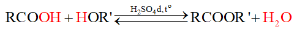
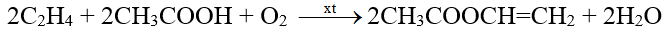
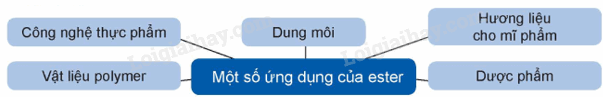
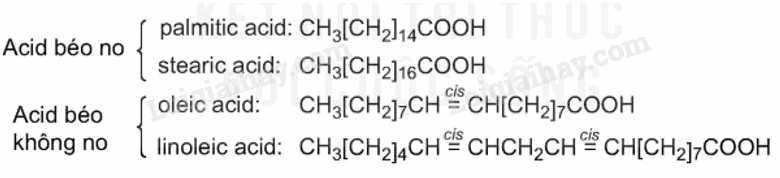
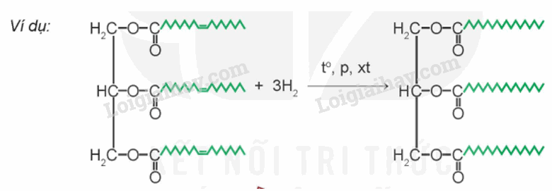

-Hóa học là một môn khoa học tự nhiên nghiên cứu về các chất, sự biến đổi và những ứng dụng của chúng. Khi nghiên cứu về các chất, chúng ta sẽ biết được thàn phần, cấu trúc, tính chất, sự biển đổi chất và những ứng dụng của chúng trong đời sống của chúng ta.
-Hóa học là một môn khoa học tự nhiên nghiên cứu về thành phần, cấu trúc,
tính chất và sự biến đổi của chất. Môn học này có thể được coi là khó bởi
vì:
+Yêu cầu kiến thức nền tảng về các nguyên tố hóa học và cách chúng tương
tác
+Đòi hỏi khả năng tư duy logic và phân tích để hiểu các phản ứng hóa
học.
+Phải học và ghi nhớ nhiều công thức hóa học và phương trình phản ứng.
-Ngành hóa học tập trung vào việc hiểu và kiểm soát các phản ứng hóa học,
đồng thời ứng dụng kiến thức này vào nhiều lĩnh vực khác nhau của đời sống
và công nghiệp. Ví dụ như:
+Y tế, dược phẩm, chăm sóc sức khỏe.
+Công nhệ thực phẩm.
+Vật liệu xây dựng.
+Vật liệu công nghệ cao.
+Nguyên liệu cho công nghiệp điện tử.
+Nông nghiệp (phân bón, thuốc trừ sâu, thuốc bảo vệ thực vật,...).
+Sản xuất hàng tiêu dùng.
+Năng lượng.
Khái niệm:
-Khi thay nhóm OH trong nhóm carboxylic của carboxylic acid bằng nhóm OR’ thì được ester. Trong đó, R’ là gốc hydrocarbon.
-Ester đơn chức có công thức chung là R – COO – R’, trong đó R là gốc hydrocarbon hoặc nguyên tử H, R’ là gốc hydrocarbon.
Danh pháp:
-Tên gọi của ester đơn chức: Tên ester RCOOR’ = Tên gốc R’ + Tên gốc acid RCOO
Ví dụ: HCOOCH2CH2CH3: proyl methanoate hay propyl formate
Tính chất vật lí
-Do không có liên kết hydrogen giữa các phân tử, ester có nhiệt độ sôi thấp hơn nhiệt độ sôi của carboxylic acid hoặc alcohol có cùng số nguyên tử carbon hoặc có khối lượng phân tử tương đương.
-Ester là những chất lỏng hoặc rắn ở điều kiện thường, hầu hết nhẹ hơn nước, thường ít tan trong nước. Một số ester có mùi thơm của hoa, quả chín như: ethyl butyrate có mùi dứa chín, isomayl acetate có mùi chuối chín,…
Tính chất hóa học
-Ester bị thủy phân trong môi trường acid hoặc môi trường base. Sản phẩm thu được khác nhau tùy thuộc vào điều kiện phản ứng
a) Phản ứng thủy phân ester trong môi trường acid như HCl, H2SO4,… thường là phản ứng thuận nghịch
Ví dụ:
b) Phản ứng thủy phân trong môi trường base
-Ester cũng bị thủy phân khi đun nóng với dung dịch kiềm như NaOH, KOH,… Phản ứng này được gọi là phản ứng xà phòng hóa.
Ví dụ: HCOOCH3 + NaOH → HCOONa + CH3OH
Điều chế
-Các ester thường được điều chế bằng cách đun hỗn hợp gồm carboxylic acid và alcohol sử dụng H2SO4 đặc làm xúc tác.

Một số ester được điều chế bằng phương pháp khác. Chẳng hạn, trong công nghiệp, vinyl acetate được tổng hợp từ ethylene và acetic acid với sự có mặt của oxygen, sử dụng xúc tác palladium:

Ứng dụng

Khái niệm về lipid, chất béo, acid béo
-Lipid là các hợp chất hữu cơ có trong tế bào sống, không tan trong nước nhưng tan trong dung môi hữu cơ không phân cực. Dựa trên cấu tạo, lipid được phân loại thành: chất béo, sáp, steroid, phospholipid,…
-Chất béo là triester (ester ba chức) của glycerol với acid béo, goi chung là triglyceride.
-Công thức cấu tạo chung của chất béo:
+Acid béo là carboxylic acid đơn chức, hầu hết chúng có mạch carbon dài (thường từ 12 đến 24 nguyên tử carbon), không phân nhánh và có số nguyên tử carbon chẳn.
+Gốc hydrocarbon trong phân tử acid béo có thể là gốc no (acid béo bão hòa) hoặc không no chứa một hay nhiều liên kết đôi C=C
-Các chất béo hay gặp

Tính chất vật lí của chất béo
-Ở nhiệt độ thường, chất béo ở trạng thái lỏng hoặc rắn. Khi trong phân tử chất béo chứa nhiều gốc aicd béo no thì chất béo thường ở trạng thái rắn như mỡ lợn, mỡ bò, mỡ cừu,… Khi trong phân tử chất béo chứa nhiều gốc acid béo không no thì chúng thường ở trạng thái lỏng như dầu lạc, dầu vừng, dầu cá,…
-Chất béo nhẹ hơn nước và không tan trong nước, dễ tan trong các dung môi hữu cơ ít phân cực hoặc không phân cực
Tính chất hóa học của chất béo
a) Phản ứng hydrogen hóa
-Các chất béo có gốc acid không no có thể phản ứng với hydrogen (khi có mặt xúc tác ở điều kiện thích hợp), tạo thành chất béo chứa gốc acid no

b) Phản ứng oxi hóa chất béo bởi oxygen không khí
-Khi để lâu trong không khí, các gốc acid béo không no trong chất béo có thể bị oxi hóa chậm bởi oxygen, tạo thành các chất có mùi khó chịu. Đây là nguyên nhân của hiện tượng dầu mỡ bị ôi.
Ứng dụng của chất béo và acid béo
-Chất béo là thức ăn quan trọng của con người. Trong cơ thể, chất béo bị oxi hóa thành CO2 và H2O, giải phóng năng lượng cho cơ thể. Chất béo dư thừa được tích lũy vào các mô mỡ.
-Acid béo omega – 3 và omega – 6 đều có lợi cho sức khỏe tim mạch, ngăn ngừa các bệnh về tim, động mạch vành, trong đó α-linolenic acid và linoleic acid là hai acid béo thiết yếu vì cơ thể không tự tổng hợp được mà phải lấy từ nguồn thực phẩm bên ngoài.
Sơ đồ tư duy
a) Ester
Câu 1.Dãy nào sau đây được xếp đúng theo trật tự nhiệt độ sôi của các chất tăng dần?